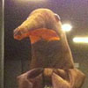

Apt
Grad: Oberst
Apt er Keiserinnens høyre hånd, og fungerer som hennes stedfortreder når hun skal representeres. Keiserinnen har enda ikke vist seg i en fysisk manifestasjon, så for alle praktiske formål er Apt å regne som det nærmeste man har sett av Keiserinnen.
Hen var først representert på 42-gallaen, hvor hen fikk såpass medfart at hen måtte tilbringe et lengre opphold på Stilla Spa Resort.
Apt er et yndet mål for berging, så det er ytterst viktig at hen blir godt passet på under formelle arrangement.